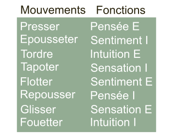

Mouvements et mbti
Les 8 mouvements en détail
- Presser est soutenu, fort et direct.
- Epousseter est soudain, léger et indirect.
- Tordre est soutenu, fort et indirect.
- Tapoter est soudain, léger et direct.
- Flotter est soutenu, léger et indirect.
- Repousser est soudain, fort et direct.
- Glisser est soutenu, léger et direct.
- Fouetter est soudain, fort et indirect.
Suite à mes observations et déductions, j’ai découvert le parallélisme entre les 8 fonctions psychologiques de Jung et les 8 efforts de base de Rudolf Laban. Si vous voulez travailler une fonction faible, réaliser le mouvement correspondant peut vous aider. A contrario un mouvement exagéré indique une fonction utilisée unilatéralement. Le mouvement peut s’observer dans l’écriture, la danse, les activités de la vie de tous les jours et même dans les mouvements du globe occulaire. 
Les 8 mouvements de base sont le résultat de la déclinaison de trois binômes d’action (2³ = 8).
Premier binôme : la durée
Un mouvement est soit soutenu ou soudain (il est continu ou est le fruit d’une impulsion). Un mouvement soutenu peut être arrêté quand on veut, tandis qu’un mouvement soudain jaillit et semble échapper au contrôle.
Deuxième binôme : le poids
Un mouvement est fort ou léger (il demande un engagement ou une relaxation musculaire).
Troisième binôme : l’espace
Un mouvement est direct ou indirect (il va droit au but ou pas).
Développement
Il est interéssant de noter que le binôme soutenu/soudain correspond au binôme mbti extraversion/introversion.